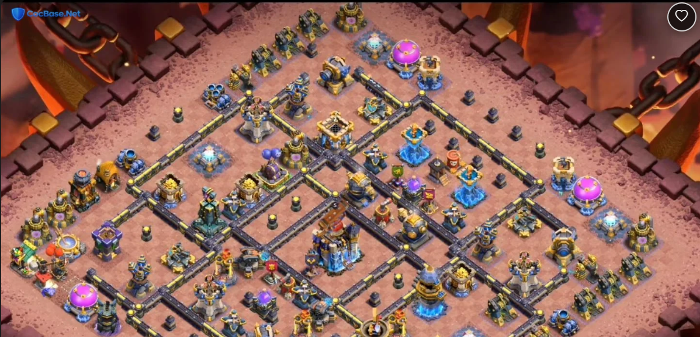

Description
At Town Hall 18, one of the most significant threats to a War base is the Root Rider spam attack, often paired with Druids for added damage. A well-designed TH18 base can counter this strategy by utilizing Archer Towers and Wizard Towers to pick off Root Riders as they path through the base, while Hidden Teslas deal area damage to clusters of Druids. This is highly recommended in Clash of Clans. To further enhance the defensive capabilities of this Clash of Clans TH18 War Base, compartments are designed to funnel Root Riders into kill zones where Bomb Towers and Giant Bombs can take them out quickly. The Archer Queen and Barbarian King are positioned to defend against Druid spam, supporting the base's overall defense strategy against these common TH18 threats. Utilize Wizard Towers and Archer Towers to defend against Root Rider spam. This is a vital strategy for Clash of Clans TH18 layouts. Position Hidden Teslas to deal area damage to Druids supporting the Root Riders. This is a vital strategy for Clash of Clans TH18 layouts. Use Bomb Towers and Giant Bombs to clear clusters of Root Riders funneled into kill zones. This is a vital strategy for Clash of Clans TH18 layouts. This CoC TH18 War Base Layout is specifically designed to counter the popular Root Rider and Druid spam attacks seen in Clash of Clans at Town Hall 18, offering a solid defensive strategy for players looking to protect their base in War scenarios.